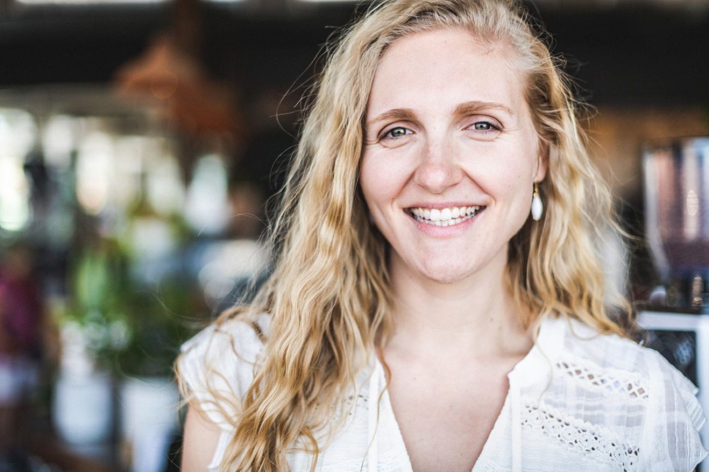
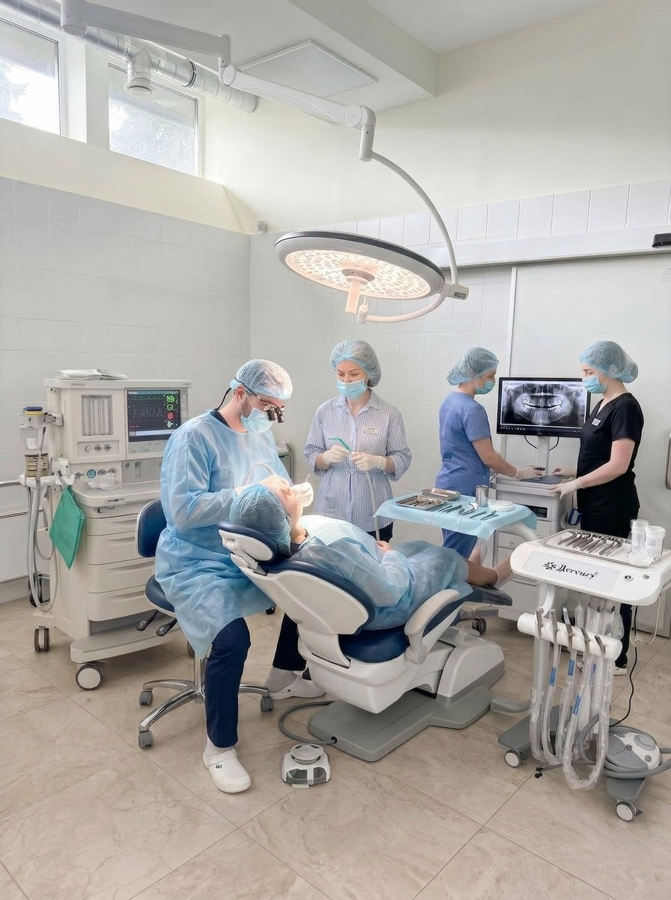
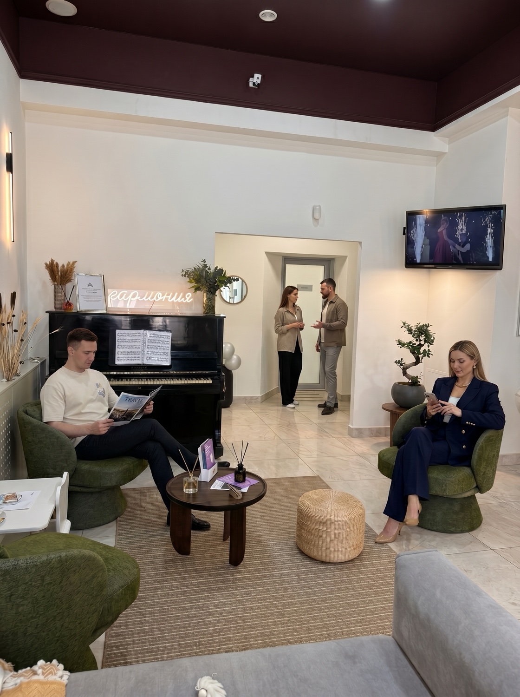
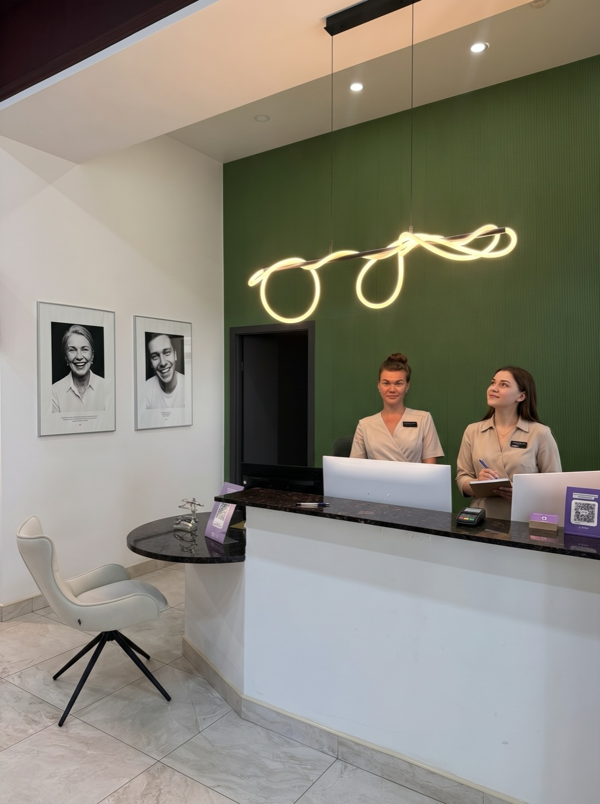
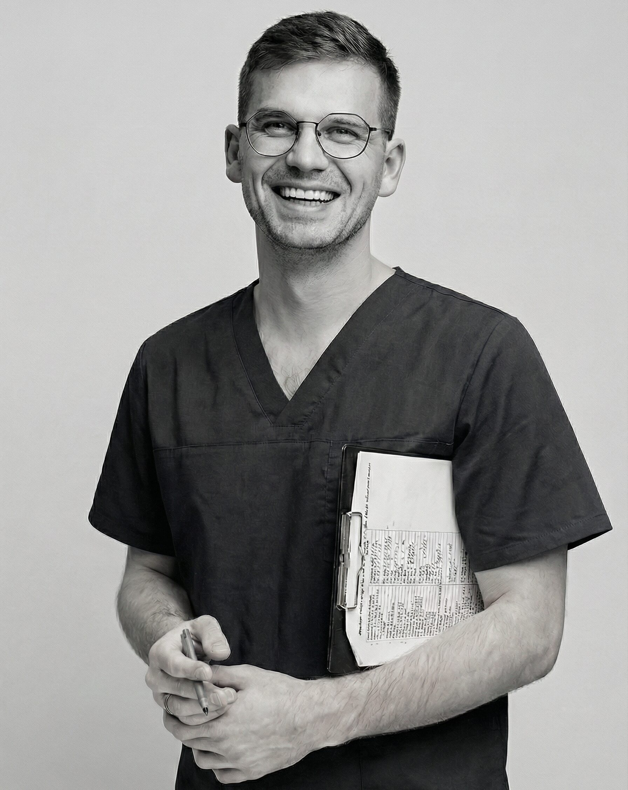

«В других клиниках развели руками — здесь взялись и помогли»
БылоМного разрушенных зубов, страх, годами не лечился
СталоЛечение и импланты за один сон — новая улыбка
Комплексная реабилитация за один визит, без месяцев ожидания.
Боитесь стоматолога и годами откладывали? Вернём здоровую улыбку без боли и страха, за минимум визитов.
Первичная консультация — 1 200 ₽, зачтём в стоимость лечения
Без осуждения. Перезвоним за 15 минут и всё обсудим без спешки.

Именно для таких случаев мы и работаем. Всё можно сделать, пока вы спите — без стресса и страха.
То, на что обычно уходят месяцы и 10 визитов, делаем комплексно за один раз — пока вы спите.
Кариес, пульпит, каналы — всё лечим за один сон, без боли и стресса.
Сложные и множественные удаления, зубы мудрости — бережно, во сне.
Установка имплантов в один этап — основа для новой улыбки.
Коронки и протезы — выходите с восстановленными, красивыми зубами.
Комплексная реабилитация полости рта — за один визит, без месяцев ожидания.
Наркоз проводит врач анестезиолог-реаниматолог. Он рядом весь сон и контролирует каждый показатель — это главное, что делает лечение во сне безопасным.
Вы ничего не почувствуете и не запомните. Закроете глаза в спокойной обстановке — и проснётесь, когда всё уже сделано. Никакого звука бормашины, никакого страха.

Анестезиолог-реаниматолог контролирует ваше состояние весь сон — от засыпания до пробуждения.
Дыхание, сердце, сатурация — под наблюдением современной аппаратуры каждую секунду.
Перед сном — необходимые анализы и обследование. Допускаем к лечению, только если это безопасно.
Лечение проходит в собственной оснащённой операционной — не «в кабинете», а по-настоящему.
Работаем по официальной лицензии № Л041-01148-78/01132097 и утверждённым протоколам безопасности.
Выход из сна — под наблюдением. Отдохнёте в комфортных условиях, пока полностью не придёте в себя.
Собственная операционная, оснащение и уютные кабинеты — чтобы вы видели, куда идёте, и пришли уже без тревоги.

Лаунж с пианино
РесепшнНикаких сюрпризов: вы заранее знаете план, стоимость и что будет на каждом этапе.
Осмотр, снимок, честный план лечения и точная стоимость. Без давления.
Готовимся ко сну: необходимые анализы, чтобы лечение прошло безопасно.
Вы засыпаете — мы делаем всё запланированное за один сон, аккуратно и бережно.
Просыпаетесь под наблюдением, получаете рекомендации и поддержку после.
Истории пациентов, которые годами откладывали — и решились прийти.
«В других клиниках развели руками — здесь взялись и помогли»
Комплексная реабилитация за один визит, без месяцев ожидания.
«Стыдилась улыбаться и не верила, что это можно исправить»
Снова улыбается и приходит на осмотры уже без страха.
«Паника начиналась ещё в коридоре — даже от анестезии»
Теперь наблюдается регулярно — уже без страха.
Имена и детали изменены для конфиденциальности.

Челюстно-лицевая хирургия и сложные удаления — в том числе всё за один визит, без лишнего стресса.
Итоговая стоимость зависит от объёма и становится известна после консультации и КТ. Цена, озвученная на консультации, не изменится.
Большой план можно разбить на комфортные платежи — без переплат. Ориентиры не являются публичной офертой.
5 простых вопросов. В конце рассчитаем план и стоимость — анонимно, без обязательств.
«Сын ни к одному зубному не садился — очень боялся. Пока не пришли в Гармонию Улыбки: там нашли к нему подход и начали лечение».
«Попал к хирургу и понял, что стоматология — это не страшно, а почти весело. Зуб удалили быстрее, чем я успел напрячься».
«Лечила зуб — и, что самое главное, совершенно безболезненно. Впервые ушла от стоматолога спокойной».
Рейтинг 5.0, 250+ отзывов. Больше реальных отзывов — на Яндекс.Картах и ПроДокторов.
Современный наркоз под контролем врача-анестезиолога безопасен. Перед процедурой проводится обследование и анализы, а во время сна непрерывно контролируются все жизненные показатели.
Да. Вы спите и ничего не чувствуете во время лечения. Никакого звука бормашины и неприятных ощущений — проснётесь, когда всё уже сделано.
В большинстве случаев да — за один сон проводим комплекс: лечение, удаление, импланты, протезирование. Точный объём определим на консультации по КТ.
Стоимость зависит от объёма и становится известна после консультации и КТ. Озвученная на консультации цена не меняется. Доступна рассрочка 0% — 28 банков-партнёров, до 12 мес., первый взнос 0 ₽.
Имеются противопоказания, необходима консультация специалиста. Именно поэтому перед лечением во сне проводится обследование — чтобы убедиться, что это для вас безопасно.
Возраст сам по себе не противопоказание. Решение принимается индивидуально по результатам обследования и анализов — безопасность всегда на первом месте.
Подробно обсудим вашу ситуацию, составим план и стоимость. Без осуждения и без давления — решение всегда за вами.
Перезвоним за 15 минут в рабочее время и всё обсудим без спешки.